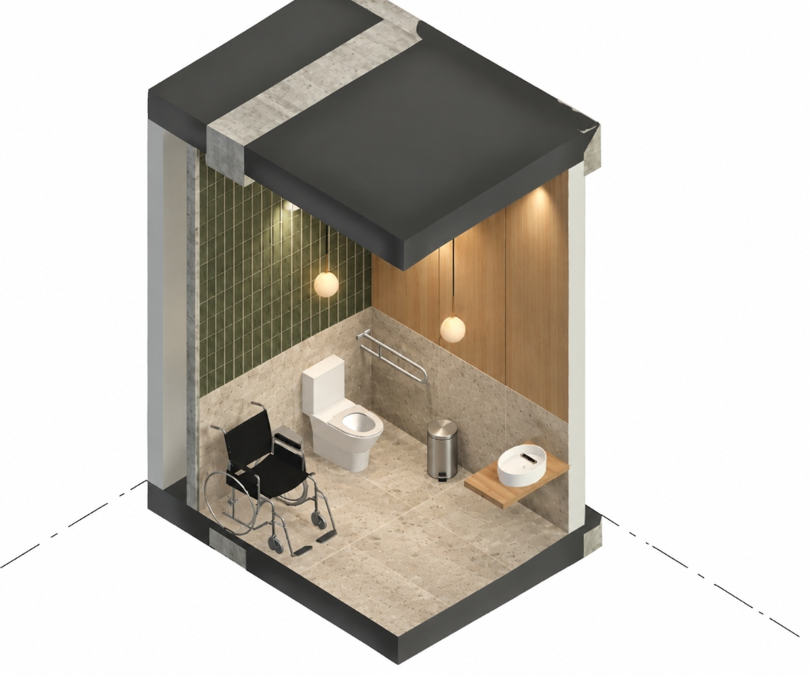
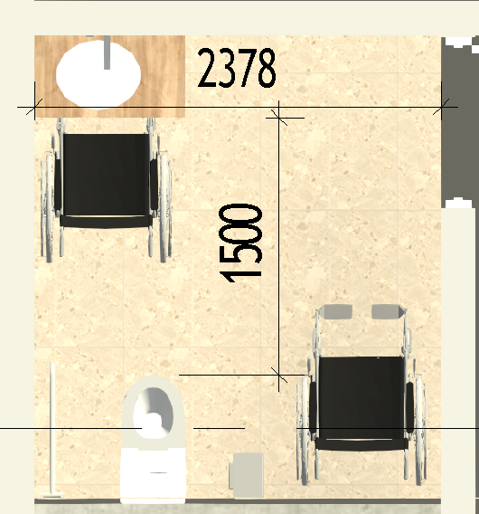

Visualización en alta resolución de los módulos sanitarios inclusivos, detalles de confort y la paleta de materiales texturizados aplicada al proyecto Rivers Mall Cúcuta.
Modelos isométricos detallados que muestran la batería de mujeres (muro verde y cabinas múltiples), batería de hombres y módulos accesibles PMR.
Acabados biofílicos con luminarias colgantes esféricas y pisos en porcelanato granito beige.

El diseño garantiza un diámetro libre de giro de 1.500 mm (1.50 metros) reglamentario por la normativa colombiana de accesibilidad universal, permitiendo la rotación libre en 360° de cualquier modelo de silla de ruedas.
Espacio circular libre de cualquier obstáculo fijo entre el lavamanos, la puerta y el sanitario.
Largo suficiente para ubicar lavamanos accesible, zona de maniobra y batería sanitaria con barra de apoyo.
Anclada sólidamente al muro estructural para soporte seguro de transferencia lateral.

Inspecciona el patrón exacto, textura superficial y propiedades de los materiales especificados para pisos, muros y acentos.
Cerámica esmaltada beige marmoleada con tecnología antideslizante ARD PRO y caras diferenciadas para pisos y zonas húmedas.
Revestimiento cerámico decorado vitrificado en verde oliva. Disposición vertical para realce biofílico y contemporáneo.
Patrón geométrico tipo panal en tono terracota cálido natural. Brinda tridimensionalidad e identidad al baño de hombres.
Revestimiento alistonado 3D Holztek en WPC hidrófugo (madera compuesta). Especificado para zona de cajeros automáticos, hall y muros de acento.
Porcelana sanitaria con tecnologías AquaFlow y CoverGloss. Pozo amplio de 46 cm diseñado para mitigar salpicaduras.
Porcelana vitrificada con sifón oculto y geometría antisalpicadura. Compatible con fluxómetros de bajo consumo (0.5 L).
Tabiquería modular suspendida para cubículos sanitarios. Máxima asepsia, resistencia a la humedad e higiene institucional.
Superficie mineral sólida para el mesón corrido escalonado de 5 lavamanos. Cero porosidad, antigraffiti y antibacterial.
Continúa explorando la distribución vertical preliminar, las oficinas privadas del Piso 3 y la localización exacta del predio.
Regresar a la Página Principal